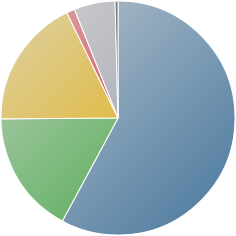
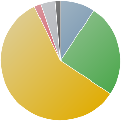

Клиентские программы для просмотра Web-страниц
Рынок браузеров в апреле 2014 года
Компания Net Applications оценила рыночные доли наиболее популярных браузеров в апреле 2014 года.Наиболее популярным браузером по прежнему остается Internet Explorer занимая 57.88%, показав небольшое снижение рыночной доли. Google Chrome занимает вторую позицию имея 17.92%. Рост продолжается и в этом месяце, закрепляя позицию. Третью позицию занимает Mozilla Firefox c 17.00%, тем самым продолжая терять позиции. Замыкают пятерку лидеров Safari и Opera, имея 5.66% и 1.14% соответственно.
Согласно данным w3schools самым популярным браузером является Google Chrome, занимая 58.4% рынка. Очередной стремительный рост на процент.Далее идут Internet Explorer и Mozilla Firefox, занимающие 9.4% и 25.0% соответственно. Оба браузера продолжают падать. Замыкают пятерку Safari (4.0%) и Opera(1.8%).
| Данные Net Application |
|

|
| Браузер |
Доля рынка |
| Internet Explorer | 57.88 |
| Mozilla Firefox | 17 |
| Google Chrome | 17.92 |
| Opera | 1.14 |
| Safari | 5.66 |
| Другие | 0.4 |
|
| Данные w3schools |
|

|
| Браузер |
Доля рынка |
| Internet Explorer | 9.4 |
| Mozilla Firefox | 25 |
| Google Chrome | 58.4 |
| Opera | 1.8 |
| Safari | 4 |
| Другие | 1.4 |
|